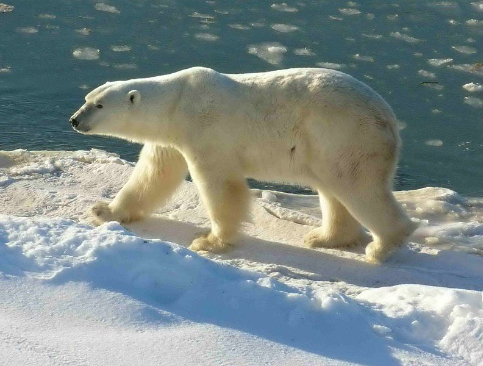

Facts
Ursi polari
Ursul polar (Ursus maritimus) este un urs alb care trăiește în zonele nordice înghețate ale Oceanului Arctic, fiind cel mai mare animal de pradă întâlnit pe uscat. Durata vieții sale este de 35-40 ani.
Descriere
Ursul polar este un mamifer mare, greutatea acestuia ajungând până la 300–600 kg la masculi și 150–300 kg la femele, înălțimea la 1,8 m și lungimea la 2,5 m. Are o blană de culoare albă. Ghearele mari și puternice sunt capabile să doboare adversarii naturali. Are un strat de grăsime alba sub piele, care îl ajută să se protejeze împotriva frigului, această caracteristică fiind întâlnită și la alte animale din tundră. Este un înotător excelent.
Corpul ursului polar este asemănător cu cel al unui urs brun. Capul poate ajunge la peste 40 cm lungime, cu circumferința de aproximativ 30 cm. Au buze extensibile, dinții sunt mai mici ca la celelalte specii, dar mai ascuțiți, gâtul mai puternic. Au buze extensibile adică nu sunt atașate de gingii și pot culege fructe mici, iar unii le pot coji. Au mirosul bine dezvoltat. Simte prada de la 30 de km depărtare. Urechile sunt mici, externe, dar au auzul bine dezvoltat.
Culoarea blănii este albă, dar poate fi gălbuie sau gri în timpul verii. Însă explicația științifică a culorii acesteia este că firele de păr, incolore, sunt goale în interior ca fibrele optice și conduc razele ultraviolete spre pielea lor neagră, unde sunt absorbite. Este foarte călduroasă, iar temperatura corpului rămâne neschimbată atunci când este foarte frig. Sistemul lor de încălzire este foarte eficient (în părul blănii se găsesc canalicule microscopice pline cu aer care asigură o izolare termică excelentă) și de aceea uneori se tăvălesc prin zăpadă pentru a se răcori.
Labele din față sunt folosite pentru înot fiind mari și membranate pentru a asigura propulsia. Cele posterioare au rol de cârmă. Prezintă gheare neretractile. Picioarele sunt mai mari decât la ceilalți urși (22 de cm lățime) și au păr pe tălpi și ventuze pentru a le conferi stabilitate pe gheață. Pe uscat nu aleargă atât de repede ca rudele sale. În apă atinge 10 km/h vâslind doar cu labele posterioare, iar scufundat poate să stea până la 5 minute. Ca și oamenii se deplasează atingând solul cu călcâiele, dar și cu talpa și pot adopta o poziție bipedă ceea ce îi avantajează atunci când trebuie să observe pericolele, să caute hrană sau să lupte. Înălțimea unui urs polar este de 1,6 m.
Mitologie
Ursul ca totem simbolizează viaţa trăită în linişte şi armonie. Ursul este un simbol al puterii, al rezistenţei. Specific zonei pacifice nord-occidentale sunt cei doi urşi (Ursus americanus şi Ursus arctos horribilis - grizzly). Aceştia pot fi văzuţi pe totemul din aceste zone, sculptaţi, cu gheare lungi, limba scoasă, nările sugerate prin două cerculeţe şi mâncând somoni. Grizzly a atras atenţia băstinaşilor datorită puterii şi cruzimii, fiind considerat protector al casei. În unele legende este considerat prinţul care se va căsători cu cea mai frumoasă fată din acea comunitate. Ziua ursului: În folclorul românesc ziua ursului este pe 2 februarie sau Stretenia atunci când se practică ritualurile viilor. Se mai numeşte Martinul cel Mare şi se crede că în această zi ursul iese din bârlog şi joacă, iar dacă îşi vede umbra mai doarme şapte săptămâni pentru că atunci se termină iarna, dacă nu vine primăvara şi nu mai hibernează. Zalmoxis: se presupune că derivă de la "zalmos" care înseamnă "piele de urs". Zeiţa Artemis: Aceasta avea preotesele îmbrăcate în blănuri de urs şi era considerată divinitate a vegetaţiei. Constelaţii: constelaţiile Ursa Mare şi Ursa Mică.Legenda spune că zeiţa Callisto şi fiul ei au fost transformaţi în urşi de către Hera deoarece aceasta a avut un copil cu soţul ei, Zeus.